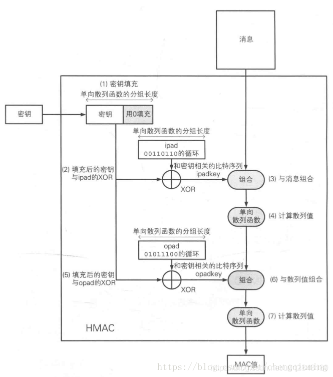

我在逆向的过程中发现很多公司都开始使用hmacsha1 作为签名校验的算法，并且这个算法基本都是放到 native 层做了一定的保护。而 sha1 则多见于 java 层，一般不做什么保护。 本文会先讲解一下hmac, 然后针对hmac的算法，看看算法存在的弱点。
算法如图：
hmac 需要用户提供一个key， 这个key 会进行扩展到hash 函数的分组长度，然后这个密钥会跟ipad, opad 进行异或运算，作为新的key和消息进行组合，然后通过hash 计算最终得出一个结果。
针对以上几个弱点，就可以很方便的制定出加固的方案了。
这里只是简单介绍了一下hmac上的攻防，希望能对读者有一定的启发。